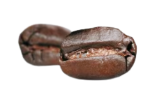
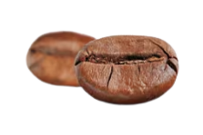

FlyInCoffee

Позиции товаров
Роскошный сорт арабика обладает богатым ароматом, вкус напитка получается насыщенным и мягким.

Королевский сорт робуста содержит почти в два раза больше кофеина, чем арабика. Это придает кофе насыщенный, слегка горьковатый привкус.

Любители экзотики оценят кофейные зерна сорта копи лувак, которые получают благодаря индонезийским циветтам. Эти зверьки, похожие на мангустов, поедают спелые кофейные плоды — зерна при этом не перевариваются. Проходя по пищеварительному тракту, зерна приобретают специфический вкус.